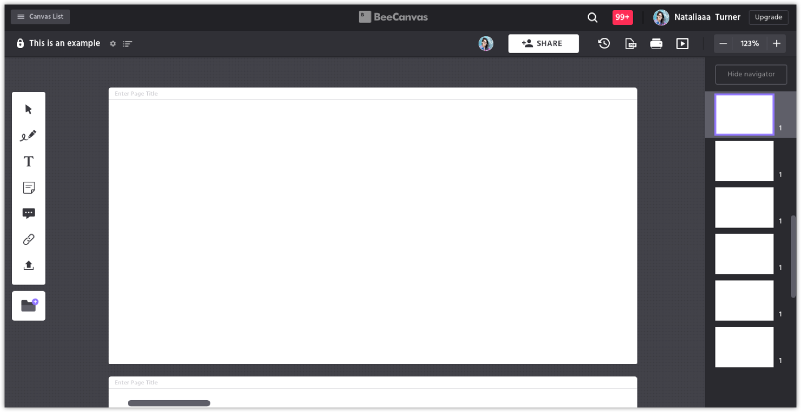
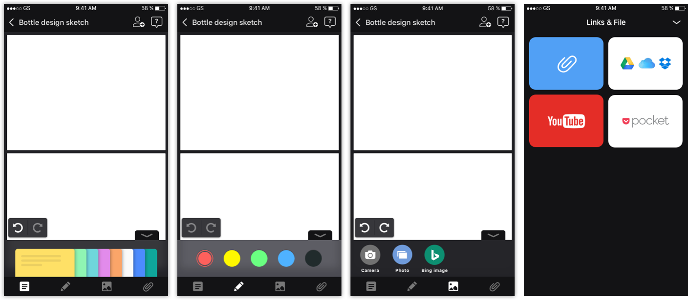

-
OVERVIEW
BeeCanvas is a visual collobartion tool based on the functions of interactive whiteboard. BeeCanvas offers a unified visual workspace for creative people.
As a UX/UI design overall director, style guides and iOS/web/CSS/interaction specification sheets were coherently produced. Both visual and textual branding mock-ups standards were ensured in this procedure. -
HATS WORN
⛈ Concepting
🗺 Wireframing
♻️ Prototyping
👂🏽 UX research
🔸 Animation
📢 Visual design
WEB · TABLET · MOBILE
Canvas UI redesign
The UI of desktop was the most important part that users spend most of their time on BeeCanvas. Our mission was to make the UI of canvas stable and make it fun to use the canvas easily.
- Opportunity
- For users who use BeeCanvas for the first time, how can we make canvas UI more intuitive and fun to use? Would it be possible for users to make the most of the features that BeeCanvas provides without watching tutorials?
- High level goals
- ↗ Update UI to reflect visual language of the web client
↗ Provide the readable visual guideline to developers
↗ Keep consistent with BeeCanvas mobile app's visual system
- Identifying painpoints
- The canvas UI was lack of clarity and stability and it was not easy to identify the main feature that BeeCanvas provides on the header navigation bar(backup, slideshow, pdf file). The toolbar was not also well designed and each of icon was not balanced.
- Explorations
- We investigated every flow involved with renewal via canvas. Because we wanted the renewal to has more stable structure and visually well designed, we needed to dig up every single element of the canvas and make it more complete.
V1 solution
For the new canvas screen design, I updated the UI and improved the canvas layout and toolbar icon. Before designing each element and adding the color, it was important to analyze the whole information structure and put the each button in that order. The header is clearly divided into 2 part, the first one is about a user and the second one is about the canvas.
New Design - Desktop

Canvas - Mobile


- Takeaways
- Providing the specific visual guideline and partnering closely with the engineer ensured successful delivery of the project. 💪
DESKTOP · WEB
Index redesign
The UI of desktop was the most important part that users spend most of their time on BeeCanvas. Our mission was to make the UI of canvas stable and make it fun to use the canvas easily.